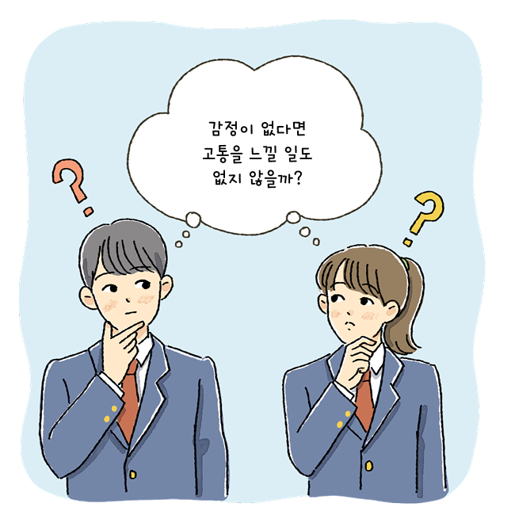

자료 읽기감정을 제거할 수 있다면
● 다음 글을 읽고 세 가지 도덕 판단은 각각 서양의 어떤 도덕 판단 기준에 따른 것인지 연결해 보자.

만약 당신이 감정을 제거하는 수술을 받는다면 어떻게 될까? 스트레스, 슬픔, 우울 등 부정적인 감정을 느끼지 않기 때문에 여러 고통의 영향을 줄일 수 있다. 하지만 즐거움, 기쁨, 만족감 등 긍정적인 감정도 함께 사라질 것이다. 결국 모든 일이 사소해지고 행위의 모든 과정이 무의미해지며, 삶이 왜 살아갈 가치가 있는지에 대해 설명하기 위한 모든 까닭이 사라질 것이다. 따라서 고통을 없애기 위해 감정을 제거하는 일은 결코 지혜로운 선택이 아니다. 긍정적인 감정은 삶을 살아가는 데 유쾌한 동기 부여가 되고, 부정적인 감정은 고통의 원인이기는 하지만, 긍정적인 감정과 마찬가지로 즐겁고 의미 있는 삶의 토대가 되기 때문이다.
- 폴 새가드, 『뇌와 삶의 의미』
● 고통을 없애기 위해 감정을 제거하는 수술을 선택한 사람에게 어떤 조언을 할 수 있을까?
우리는 고통을 극복함으로써 한층 더 성장할 수 있고 고통을 극복하는 과정에서 긍정적인 감정을 느낄 수도 있기 때문에 고통을 없애기 위해 감정을 제거하는 것은 바람직하지 않다.